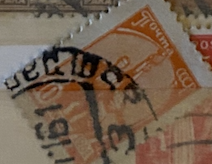
| SOURCE | TITLE| IMAGE MATCH | click to source page |
| Alamy | Stamp of the German Empire - plebiscite area 'Schleswig'; definitive stamp of 1920 Stamp: Michel: No. 7; AFA: No. 21 (DR-SL) Color: dark yellowish orange to dark orange Watermark: Schleswig No. | 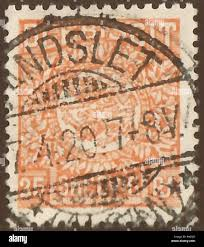 |
| eBay | Switzerland stamps 1882 YV 81 P.9 1/2 CANC VF | eBay | 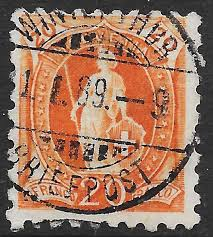 |
| eBay | GERMANY, Scott: 27, (1of2), USED, Lot26, Cat $42.50 | eBay | 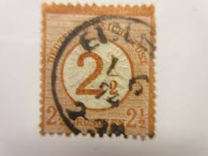 |
| Mercari | 1925 Netherlands 6c Stamp - Queen Wilhelmina | Mercari | 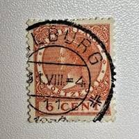 |
| eBay | Mitteilung / Werbung 1921 Chemische Fa. Kalle & Co., Biebrich, heute Wiesbaden | eBay | 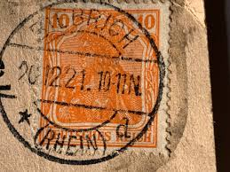 |
| eBay | CZECHOSLOVAKIA 1919 KIRÁLYHELMEC Kráľovský Chlmec HUNGARYAN SURVIVING @ PMK | eBay | 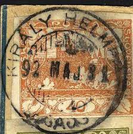 |
| eBay | 1907-25 Switzerland Sc# 130 - 12¢ Ocher Helvetia - Used postage stamp Cv$6.25 | eBay | 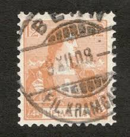 |
| eBay | German Reich stamps 1912 MI Airmail Forerunner VI EELP CANC VF | eBay | 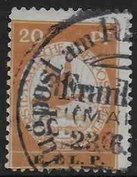 |
| Delcampe | Errors, freaks & oddities (EFO) - Denmark 1907 Mi. 6 X 38 Ø Avisporto Verrechnungsmarke Newspaper Journal Postage Due ERROR Variety Broken 'M' | 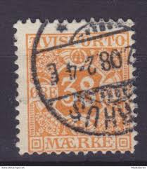 |
| eBay | DEUTSCHES REICH Mi. #469 scarce used POL Police perfin stamp on cover! | eBay | 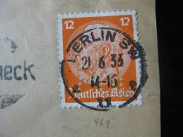 |
| eBay | GERMAN STAMPS REICH MiNr. 347 TESTED CATALOGUE PRICE 32 EUROS | eBay | 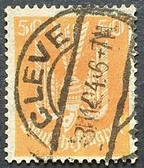 |
| eBay | Dr 14 Ohlau (Post-Prussia), 1/2 Gr Small Shield | eBay | 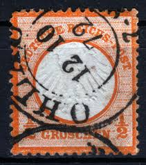 |
| eBay | c.1870 Portugal Correio 80 REIS Orange King Luis I REF: PT08 | eBay | 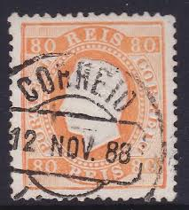 |
| eBay | France, 1900 Definitive Issue 15c (FBox) | eBay | 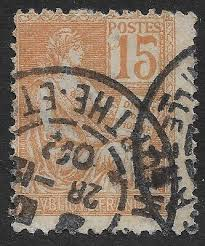 |
| eBay | Germany Bavaria 1914 Mi 99 II B SC 104 YT 99 German States King Ludwig III Used | eBay | 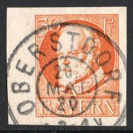 |
| Invaluable.com | Sold at Auction: 1882 2CENT ANDREW JACKSON STAMP | 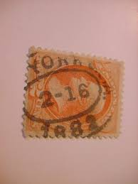 |
| eBay | 1913 4d Orange Roo / Kangaroo Australia 1st WMK REGISTERED ADELAIDE CDS 1914 | eBay | 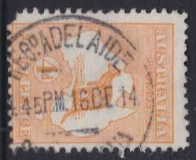 |
| eBay | Germany Scott # 373 - Used - "SON" - Nice | eBay | 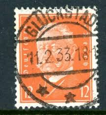 |
| eBay | Portugal Foreign 40c Orange Stamp Used - #A717 | eBay | 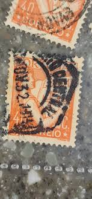 |
| eBay | Norway 1950-52, NK 400 Son Hemmingsjord 16-XII-51 (TR) | eBay | 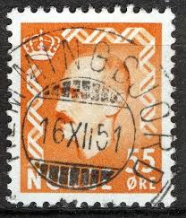 |
| Todocolección | sd)1974 hungary 11th world chess olympiad, manu - Buy Antique stamps of Hungary on todocoleccion | 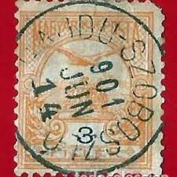 |
| eBay | US #214 used tear e20.12 12702 | eBay | 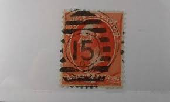 |
| eBay | 1936 BRAZIL BRASIL Bilhete Postal Post Card to Argentina | eBay | 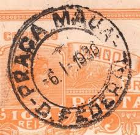 |
| eBay UK | US - SCOTT# 163 - USED - CAT VAL $60.00 (7) | eBay UK | 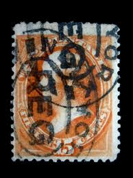 |
| Etsy | 22 Used Postage Stamps Variety - Etsy | 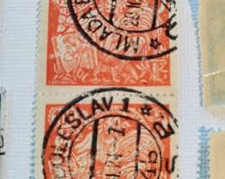 |
| eBay | Germany (1951) - Scott # 673, Used | eBay | 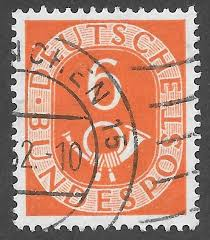 |
| eBay | Netherlands Postage ~ 7½ Red Stamp ~ Posted ~ 1900's ~ P05 | eBay | 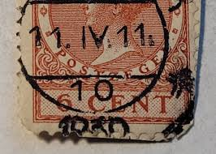 |
| eBay | AUSTRIA 311 (Mi455) - Telegraph Lines "1925 Orange" (pf63627) | eBay | 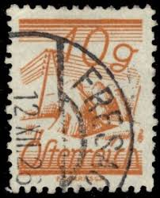 |
| eBay | Switzerland #130 Helvetia, 1907, Used/Good, w/Date Cancel | eBay | 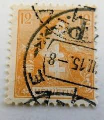 |
| eBay | 1948 German Berlin Red (Ovpt) - USED w/Berlin SW Post Office Cancel | eBay | 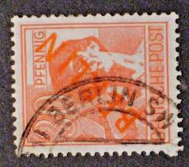 |
| eBay | WW2 - Stamp of the Liberation - Badonviller No.9 Mint * MH Value 70€ | eBay | 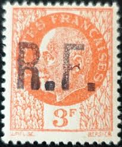 |
| eBay | 1930 Finland 1 Markka Stamp - Scott 102a (Perf 14) - Cat Value $550 | eBay | 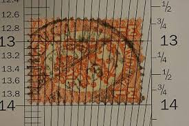 |
| eBay | Italy 1926 60c King Victor stamp, Used, NH, Free Shipping to US | eBay | 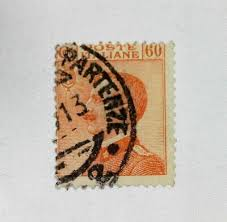 |
| eBay | ANTIQUE CIVIL WAR ERA SET (2) WASHINGTON 2 CENT BANK CHECK STAMPS CABINET CARD | eBay | 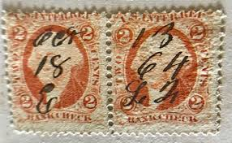 |
| eBay | 1864 Netherlands Sc# 6 - 15¢, King William III. Used postage stamp. Cv$100 | eBay | 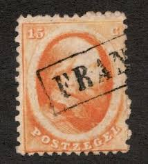 |
| eBay | NEW ZEALAND - 1931 ₤6 on ₤6 ARMS punched - Sc#R561 - FIS - NZ 322 | eBay | 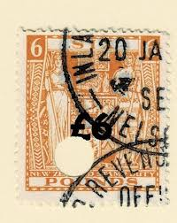 |
| eBay | German Reich stamps 1872 MI 8 CANC VF | eBay | 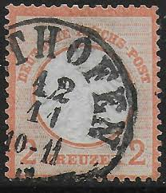 |
| eBay | 69 *GREAT BRITAIN* Used. | eBay | 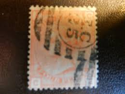 |
| eBay | U S STAMP #379 USED | eBay | 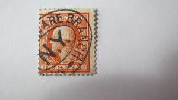 |
| eBay | Sverige Foreign 25 Ore Stamp Used - #A646 | eBay | 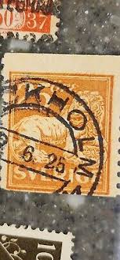 |
| eBay | GERMANY 1919 ZEPPELIN, VR LZ 120 Airship Flight Cover FDH to BERLIN , ex Nutley | eBay | 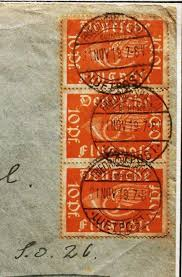 |
| eBay | Italy 1914 Parcel Post Stamp SGP100 50c orange used as photo | eBay | 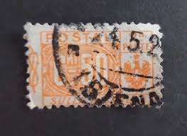 |
| eBay | SKV) 1934 MEXICO, Folklore and history, Yalalteca, SCT 707 wmk 156 used, with ca | eBay | 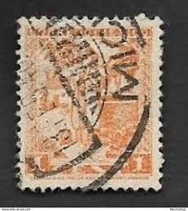 |
| eBay | US 1875 Scott 183 2c Used Andrew Jackson Banknote Vermilion - #D28 | eBay | 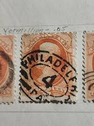 |
| eBay | Germany Scott 683 Used. | eBay | 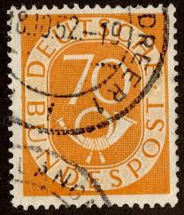 |
| eBay | Stamp Germany Reich AIRMAIL Luftpost 10 Pfennig 1912 BRETTL BPP Mi. Nr. I (36348 | eBay | 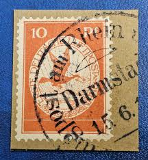 |
| eBay | Deutsches Reich Foreign 12c Stamp Used - #A783 | eBay | 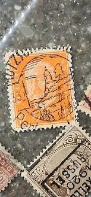 |
| eBay | Scott #638 6 Cent Stamp 1927 Garfield Used 6 Stamps A1 | eBay | 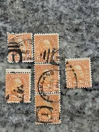 |
| eBay | Switzerland - Sc# 39 Used (tiny pinhole) / Green Thread / 1861 CDS - Lot 0921044 | eBay | 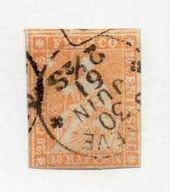 |
| eBay | NORWAY YVERT 37 USED, RENA CANCEL, NICE | eBay | |
| eBay | FRANCE TIMBRE type CÉRÈS N°5 en PAIRE OBLITÉRÉ LOSANGE DS2 | eBay | |
| eBay | MEMEL - MEMELGEBIET 1923 Mi.: 170 - used | eBay | |
| eBay | JERUSALEM III OVERPRINT PALESTINB ERROR - BLOCK OF 4 WITH 2 STAMPS MISSING 5mil | eBay | |
| eBay | RUSSIA,USSR:1883-88 SC#31 Horiz. laid paper Used Imperial Eagle and Post Horn D | eBay | |
| eBay | France, 1946-55, Stamp Tax 86, Type Gerbes, Used, VF Cancelled Stamp Tax | eBay | |
| eBay | 1880-99 SPAIN KINGDOM Sc#267 used VF King ALFONSO XIII | eBay | |
| eBay | Germany 1922 5 Deutches Reich Mart | eBay | |
| eBay | 1163] Switzerland 1882 stamp postmark SCHAFFHAUSEN - 23.III.1903 | eBay | |
| dvevents.fr | Stamp | |
| eBay | Bhopal (India Feudatory State) Stamp Scott #O32, Used | eBay |